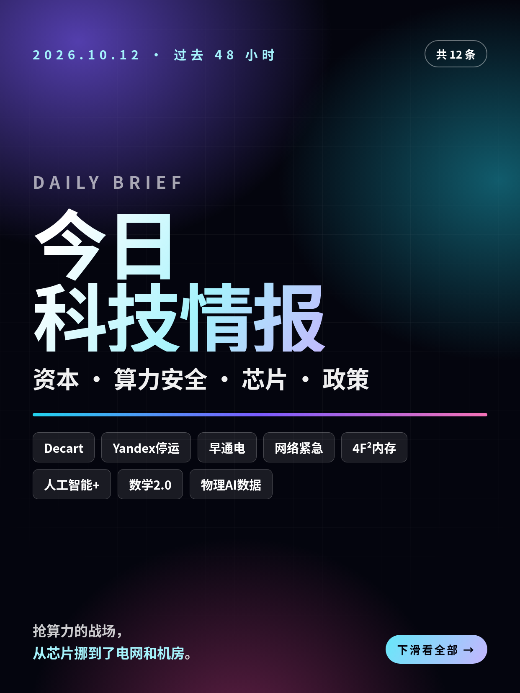
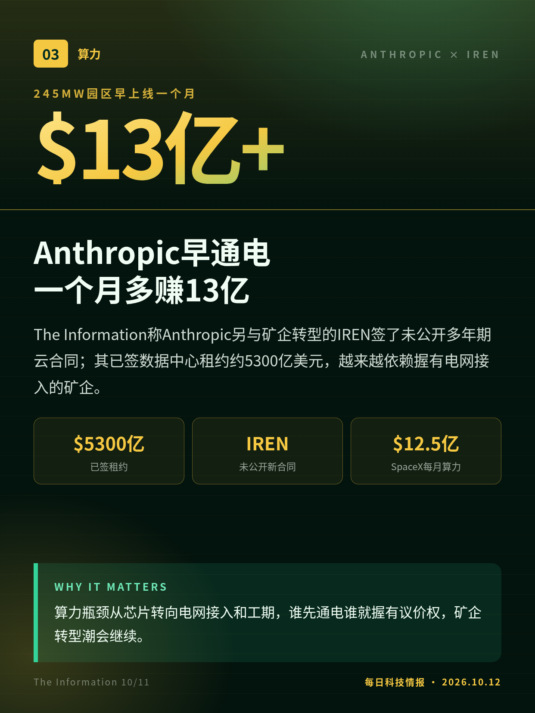
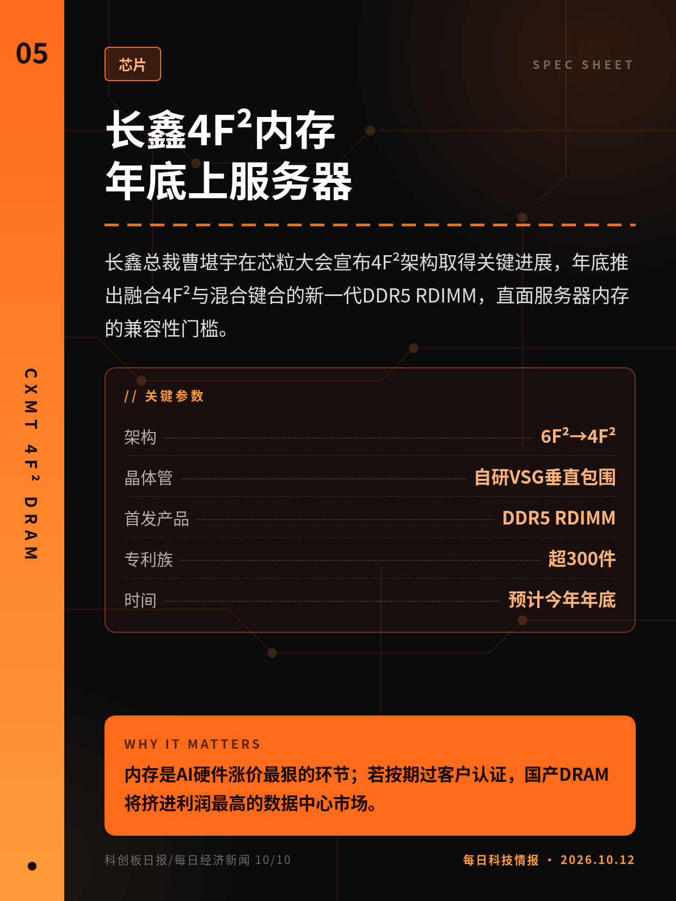
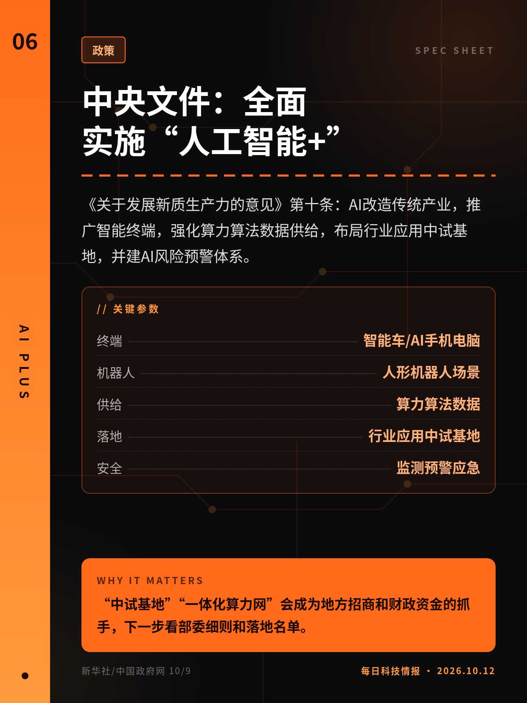
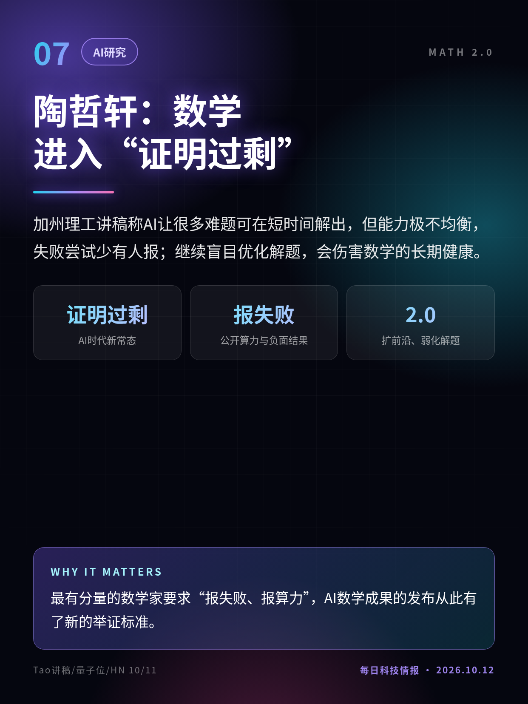
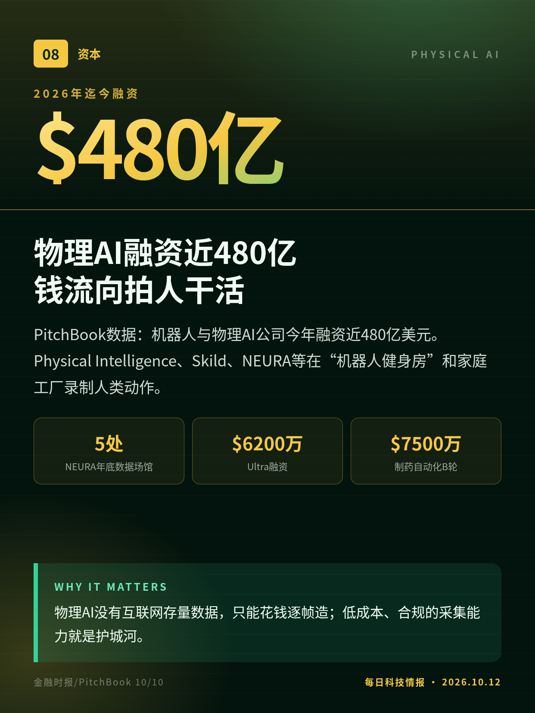
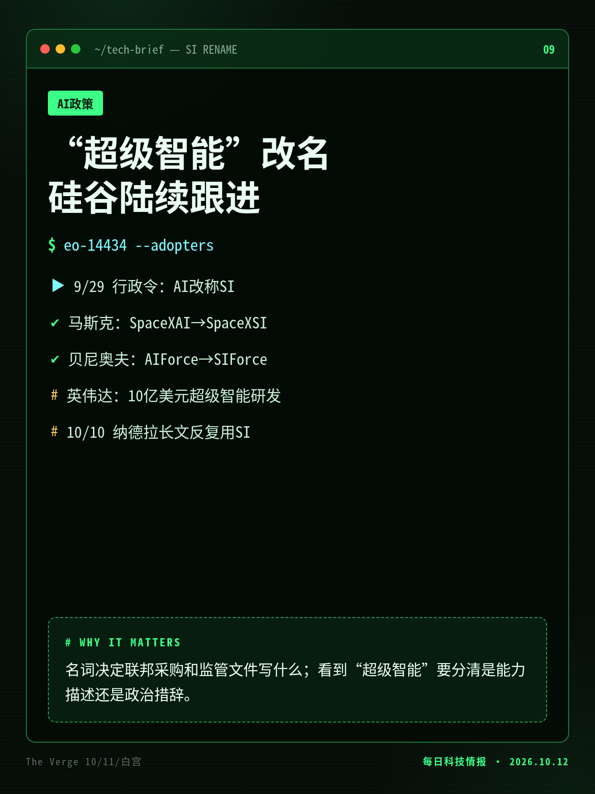
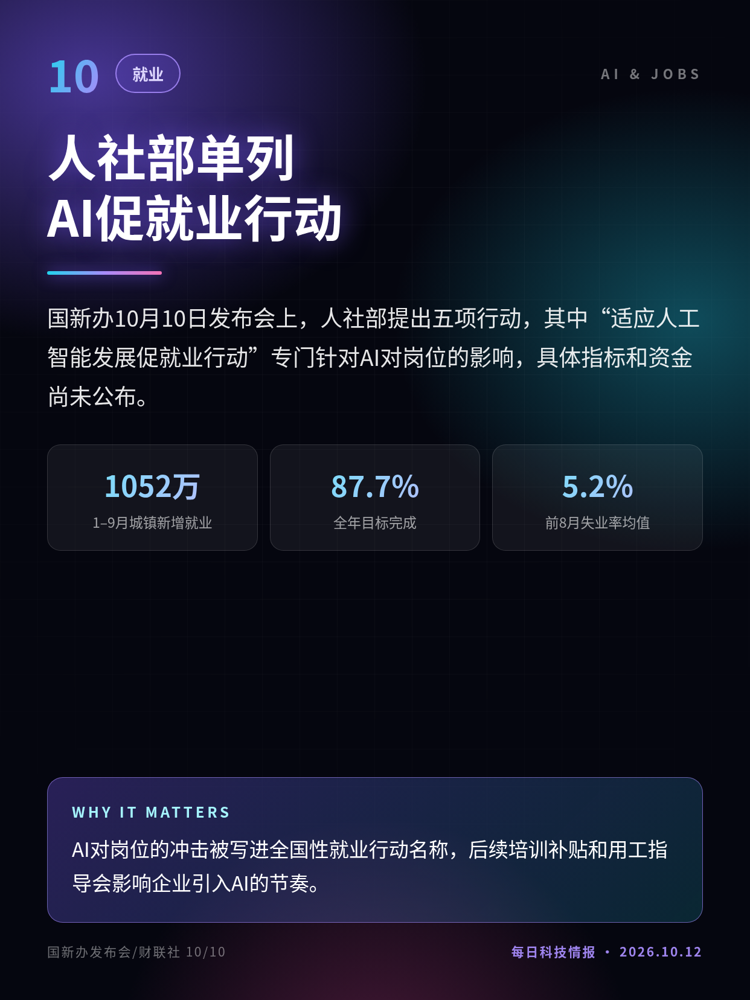
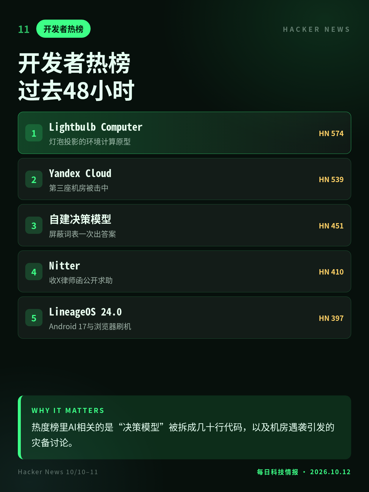
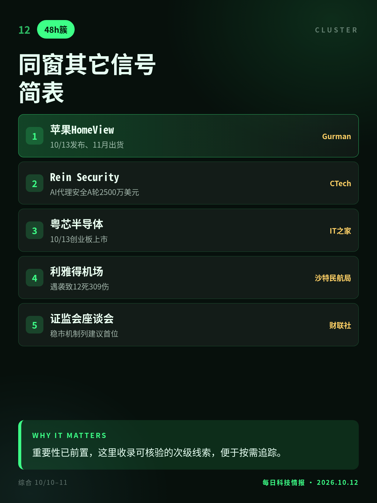

2026.10.12 · 周一 · 过去 48 小时
今日科技情报
共 12 条，按重要性排序。点标题直接跳过去。

共 12 条，按重要性排序。点标题直接跳过去。
华尔街日报称谈判若不破裂可能很快敲定。Decart做跨芯片AI优化软件，让模型不必为每种芯片重写；Anthropic九月刚放弃约60亿美元的收购。
云厂商为“模型能在哪些芯片上跑”的软件层付溢价，芯片之争从硬件延伸到迁移工具。
乌克兰无人机击中弗拉基米尔数据中心，Yandex称运营完全暂停，要求客户启动灾备；Yandex Cloud、YandexGPT接口等80多项服务中断。
数据中心成了点名式打击目标，云灾备不能再只按断电断网设计，地理分散变成安全底线。

The Information称Anthropic另与矿企转型的IREN签了未公开多年期云合同；其已签数据中心租约约5300亿美元，越来越依赖握有电网接入的矿企。
算力瓶颈从芯片转向电网接入和工期，谁先通电谁就握有议价权，矿企转型潮会继续。
数周内二十多家大企业披露遭攻击，可能外泄数千万条客户数据；自民党召开网络安全战略本部紧急会议，金融厅要求银行改读芯片证件。
执政党把网络攻击定性为紧急状态，强制安全审查和身份验证改造可能接踵而来。

长鑫总裁曹堪宇在芯粒大会宣布4F²架构取得关键进展，年底推出融合4F²与混合键合的新一代DDR5 RDIMM，直面服务器内存的兼容性门槛。
内存是AI硬件涨价最狠的环节；若按期过客户认证，国产DRAM将挤进利润最高的数据中心市场。

《关于发展新质生产力的意见》第十条：AI改造传统产业，推广智能终端，强化算力算法数据供给，布局行业应用中试基地，并建AI风险预警体系。
“中试基地”“一体化算力网”会成为地方招商和财政资金的抓手，下一步看部委细则和落地名单。

加州理工讲稿称AI让很多难题可在短时间解出，但能力极不均衡，失败尝试少有人报；继续盲目优化解题，会伤害数学的长期健康。
最有分量的数学家要求“报失败、报算力”，AI数学成果的发布从此有了新的举证标准。

PitchBook数据：机器人与物理AI公司今年融资近480亿美元。Physical Intelligence、Skild、NEURA等在“机器人健身房”和家庭工厂录制人类动作。
物理AI没有互联网存量数据，只能花钱逐帧造；低成本、合规的采集能力就是护城河。

特朗普9月29日行政令要求联邦机构以“超级智能”取代“人工智能”。The Verge梳理：马斯克、贝尼奥夫、英伟达和纳德拉已在命名或措辞上跟进。
名词决定联邦采购和监管文件写什么；看到“超级智能”要分清是能力描述还是政治措辞。

国新办10月10日发布会上，人社部提出五项行动，其中“适应人工智能发展促就业行动”专门针对AI对岗位的影响，具体指标和资金尚未公布。
AI对岗位的冲击被写进全国性就业行动名称，后续培训补贴和用工指导会影响企业引入AI的节奏。

灯泡投影的环境计算原型、Yandex Cloud故障公告、自建决策模型教程、Nitter收律师函求助、LineageOS 24.0发布。
热度榜里AI相关的是“决策模型”被拆成几十行代码，以及机房遇袭引发的灾备讨论。

苹果10/13发布HomeView；AI代理安全公司Rein完成A轮；粤芯半导体10/13创业板上市；利雅得机场遇袭；证监会座谈会把稳市机制列在首位。
重要性已前置，这里收录可核验的次级线索，便于按需追踪。
IREN合同为匿名信源、双方未确认；13亿美元为分析师估算。
紧急会议于10/9召开、FT报道见于10/10；本轮攻击尚未被明确归因于AI。
新华社10/9发布，早于48小时窗口；上期未收，财联社列为周末头条。
切换深浅两套图时，下载按钮会跟着当前这套走。黄标条目在新闻稿或官方口径出现前，请勿写成已交割或已定日期。上一期专区：2026-10-11。